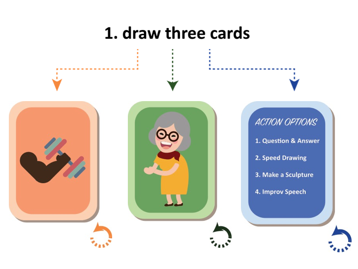
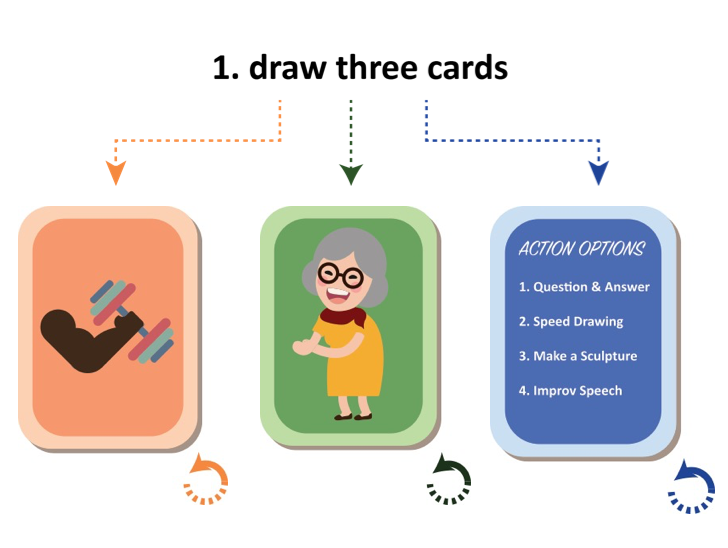

ux research: ethnographic interviews
Using a user-centered design process, our product design was heavily informed by user research.

We interviewed students, elementary school teachers, parents, school administration, researchers, and education professors.
We found that
Because of administrative work, teachers lack the time to incorporate creative curriculum into their lecture.
and
high-energy elementary school students need structured chaos to practice creativity


 
